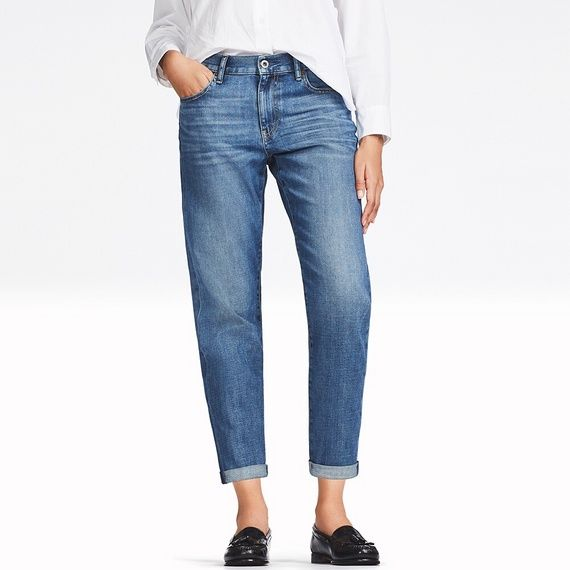

Познакомимся поближе
Сегодня магазины одежды Uniqlo являются предметом зависти ритейлеров по всему миру. Это одна из крупнейших японских сетей, которая предлагает минималистичный дизайн, качественные материалы и, что очень важно, низкие цены. Название преобразовано от «Unique Clothing Warehouse» — “Дом уникальной одежды”. Бренд создает повседневные и спортивные коллекции, а также выпускает коллаборации с KAWS, «Улицей Сезам», «Peanuts», UNDERCOVER, JW Anderson и многими другими.
История появления бренда
Создание торговой марки
В 1949 году в городе Убе, который находится в префектуре Ямагути, родился Тадаси Янаи.(на фото) Его отец был владельцем компании Ogori Shōji. Она одно время управляла магазинами Men’s Shop OS. После учебы Тадаси продавал посуду и мужскую одежду в супермаркете JUSCO. В конце 1970-х годов он решил присоединиться к бизнесу отца.
В мае 1984 года семья открыла магазин повседневной одежды унисекс в Хиросиме. Его назвали «Unique Clothing Warehouse».
Первоначально из-за сокращения «unique clothing» бренд собирался зарегистрироваться как «uni-clo». Однако в 1988 году сотрудники случайно поставили вместо «C» букву «Q». Так появилось название Uniqlo.
Компания в период кризиса
Через десять лет со дня открытия первого магазина в Японии их уже насчитывалось более ста. Однако в конце 1990-х годов страна переживала кризис. Тогда в компании было решено сменить стратегию. Они переименовали холдинг в Fast Retailing и стали разрабатывать, производить и распространять исключительно свою продукцию. А благодаря аутсорсингу в другие страны, как и многие другие крупные торговые марки, они смогли снизить расходы. Сочетание качественной, но недорогой одежды оказалось хитом. В то время покупатели боролись за каждую копейку, и «Юникло» стало той самой золотой серединой. Вскоре компания решила объединяться с японскими модными журналами, знаменитостями и новыми дизайнерами, чтобы вдохнуть новую жизнь в бренд. Это позволило открыть магазины в Европе.
Дальнейшее развитие бренда
Куртки UNIQLO
После того, как бренд завоевал рынок повседневной одежды, начало развиваться спортивное подразделение марки. Компания заключила контракты с самыми известными теннисистами, среди которых Кэй Нисикори, Новак Джокович и Роджер Федерер. Они также сотрудничают с гольфистами и экстремалами. Для последних требуются не только базовые элементы гардероба вроде футболок, брюк и шорт, но и куртки.
Популярными моделями являются парки, изготовленные из хлопка и полиэстера. Поверхность обрабатывается водоотталкивающим покрытием. Бренд всегда выбирает сдержанные оттенки вроде черного, темно-синего, оливкового и бежевого. Иногда бывают исключения, особенно для женской коллекции. Существует три основных модели: классическая Blocktech Fishtail Parka, укороченная куртка Blocktech и Mountain Parka с множеством карманов, изготовленная из хлопка с нейлоном.

Хитом продаж являются ультралегкие пуховики (Ultra Light Down Jacket). Они изготавливаются из тонкого нейлона, а в качестве утеплителя используется пух. Куртку можно легко упаковать в специальную сумку. Такой же принцип используется в жилетах. Цена варьируется от 4000 до 7000 рублей.
Джинсы UNIQLO
Япония является одним из лучших производителей денима. Поэтому в коллекциях Юникло обязательно присутствуют джинсы, изготовленные на родине бренда. Они стоят около 5000 рублей. Отправной точкой для джинсов является сама ткань. Работая с производителями текстиля со всего мира, Uniqlo разрабатывает свой совершенно новый материал. Привлекаются специалисты по отделке денима, чтобы создать эффект выцветания и потертостей.
Цена на джинсы, изготовленные в других странах, например в Бангладеше, еще ниже. Мужские и женские модели стоят около 3000 рублей. Брюки представлены в светлых и насыщенно темных оттенках. В качестве материала используется хлопок с небольшим добавлением полиэстера и спандекса.

Перешив одежды
В отличие от многих других магазинов одежды, которые берут оплату за перешив, Uniqlo отказался от этого – удлиняет штаны и меняет одежду. Сеть не только бесплатно перешивала одежду под необходимый размер – она делала это в течение нескольких часов, а иногда и несколько минут.
Это внимание к индивидуальной одежде для клиентов сделало Uniqlo огромным хитом как в родной Японии, так и в соседних странах, таких как Корея и Таиланд.
UNIQLO в России
Сегодня магазины Юникло находятся по всему миру. Их насчитывается более полутора тысяч. В Россию сеть пришла в 2008 году. Однако в то время бренд продвигался в нашей стране очень аккуратно. Спустя два года открылся первый магазин в Москве. Затем бренд появился в Санкт-Петербурге. В 2015 году было решено двигаться в регионы. Сегодня Uniqlo есть в Нижнем Новгороде, Казани, Ростове-на-Дону и Екатеринбурге. На данный момент открыто 34 магазина. Бренд уверенно увеличивает долю на российском рынке. Этому способствуют и коллаборации с Диснеем, «Улицей Сезам» и «Peanuts».
Немалую часть в продвижении занимает реклама, начиная от роликов со спортсменами и заканчивая интерактивными играми и акциями. В некоторых кампаниях используется слоган «LifeWear» — «одежда для жизни». Настоящим и будущим покупателям объясняют философию марки, которая направлена на создание простых, практичных и качественных вещей.